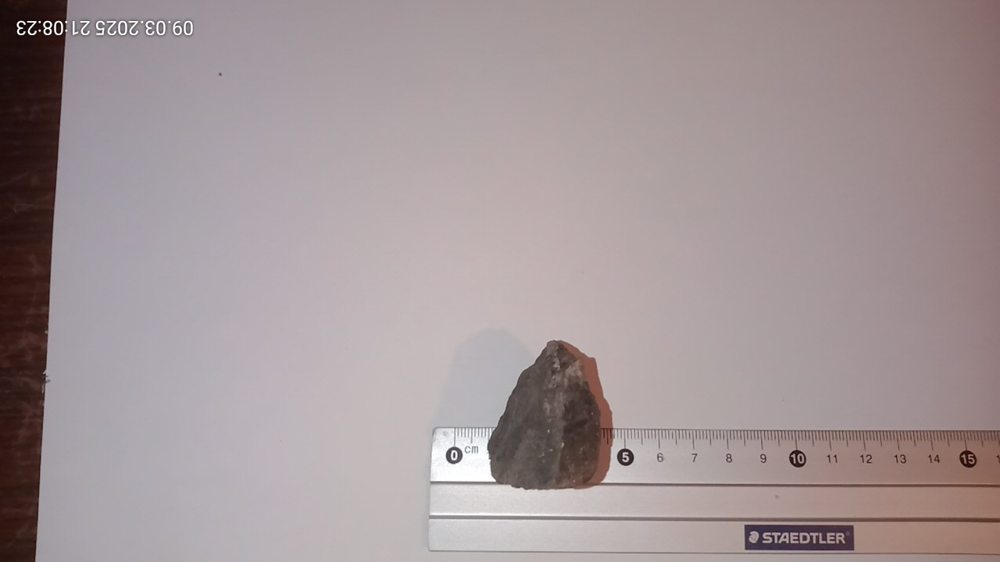

[Startseite] [Artikel] [Astronomie]
[Spieleentwicklung] [GAIA] [Rechtliches]
[Mineralien]
[Fossilien] [Kunst] [Leipzig] [Biologisches]
[A-D] [E-H]
[I-L] [M-P] [Q-T] [U-X] [Y-andere]
| Katalognummer: | M0072 |
| Gewicht: | 2,4g |
| angebener Fundort: | Vietman |
| Erwerbungsjahr: | 2020 |
| Katalognummer: | M0068 |
| Gewicht: | 80g |
| angebener Fundort: | Agentinien |
| Erwerbungsjahr: | - |
Aktualisiert: 11.08.2025